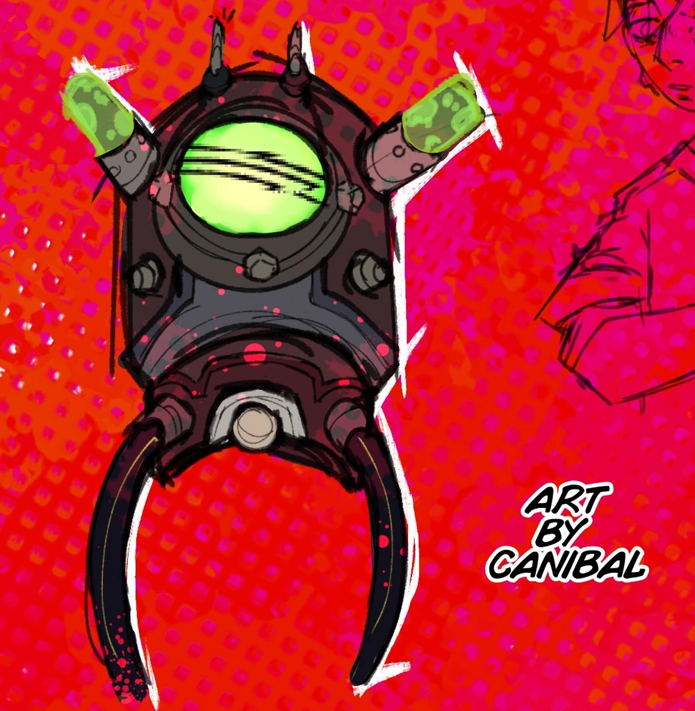
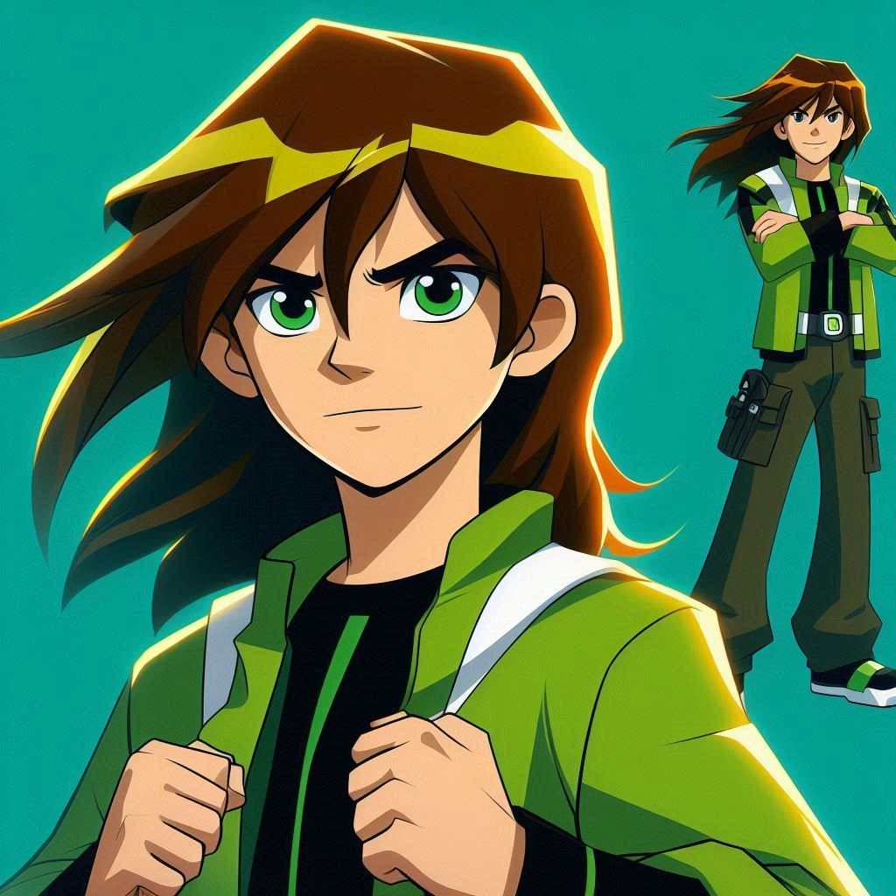

SUMMARY
Draven Tennyson as the name suggest is a descendant of Ben Tennyson of the Prime/Main Universe, he was one of the many child soldiers that due to World War 4 was forced to fight and kill in said war, not cause he actually believed what his “superior” kept telling him but simply for survival, Draven was the only one due to his Tennyson blood to be capable of be compatible and survive the process of inject “Project X-10” Aka an attempt of higher powers to recreate the Omnitrix with modifications that would render the user a soldier ready for any situation that just like a kid could be shaped as their liking.
Things didn’t go as planned though, and while the “watch” did indeed turned turned Draven into various aliens forms, humanity foolishness created a Monster/s with a monstrous look, and in its mind the only thought of killing and dominate
“inferior beings.” Eventually Draven was saved by Paradox who deactivated the watch before it was too late, but even with that of course Draven wouldnt had just forgot…
Not wanting history to repeat itself, Paradox did a higher level of hypnotherapy on Draven, causing him to seemingly forget everything, making him live the life he always should have had, a happy one.
Powers and Stats
Tier: Varies
Key: Kid Draven, Pre canon Fic era.
Name: Draven Tennyson
Origin: Ben 10
Gender: Male
Age: 10 as of last recorded time.
Classification: Holder of the Carnitrix, Excutioner, GOD, MONSTER.
Powers and Abilities:
Attack Potency: City Block level, as Way Big on size alone he is big enough to generate that energy, Island Level just by stepping Way big can generate magnitude 7 earthquakes Multi-Continental level when he got out of their control the goverment tried to shoot him down with a Sun blast failing to do damage. at least Large Planet level, Draven aliens forms were at least as powerful as Ben original ones, so they scale to Wildvine feat of destroying Amulets that could move the moon that got calculated to that power. And Upchuk being capable of eating his own planet. And Upgrade being stronger than his other alien species that rebuilt their planet and Shock Rock being capable of destroying planet earth. Large Star level, the government when tried to get rid of him, had sent him to Petropia… it ended in Heatblast with a Supernova busting up the planet. Galaxy level, Humungousaur in OG series was strong enough to destroy a machine that is capable of destroying Several Light Years.(considering all the aliens are in a way relevant to each other like in OG) Multi-Galaxy level, Way Big species is born in Cosmic Storms, In fic canon Shock-Rock destroyed Phoenix-A The largest recorded Black Hole in our world
High Universal Level, Way Big generated a Cosmic Storm that surpassed the stronger registed one that was only second to that of the Big-Bang. Higher while not all feats are recorded, this are just the feats Draven aliens forms did as a kid, and since the Omnitrix forms age with the Users, Draven aliens were kids too age wise, so they are bound to be stronger as Draven grow up just like in canon, as in canon the Aliens get also stronger if base user is stronger and obviously 14 year old Draven is physically stronger than his 10 year old self. Who is stronger Alien? At the time Way-Big.
Speed: MFTL+ most aliens just like in canon scale to Ben Feedback, who as a 10 year old could intercept a Tachyon canon Feedback species is also in general fast enough to travel in out of their planet who is 60 light-years in diameter, Infinite multiple aliens can travel and have traveled the Universe which is infinite in size just like in canon.
Lifting Strength: Varies (I am not really gonna talk about this, cause its not that important)
Range: Interplanetary to Interstellar usually, High Universal, was largest recorded at that time.
Weaknesses: The aliens arent that smart? Or at least not as they could be since Draven had no control on them, and in their head the transformations just basically killed everything they looked at, so they werent the biggest strategic minds, there is also to say that while just in the original Carnitrix AU, the watch can be forced to time out, and if one stay far enough away, the watch wont activate on its own…although that would need to be VERY far away as the range as shown before is very high.
{kind=link}
{kind=link}
{kind=link}
{kind=link}